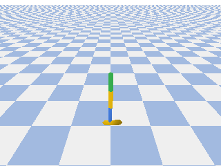

Figure: Random inputs crumples up and falls (left). Vanilla Policy Gradient (VPG) leans forwards (middle). Proximal Policy Optimization (PPO) hops forwards (right).
11/18/2024
Figure: Random inputs crumples up and falls (left). Vanilla Policy Gradient (VPG) leans forwards (middle). Proximal Policy Optimization (PPO) hops forwards (right).
The Bullet Hopper environment is a simulated robotics task built on the PyBullet physics engine. It is widely used in reinforcement learning (RL) research to benchmark locomotion algorithms. In this environment, the agent controls a simplified single-legged robot tasked with learning to move forward in a stable and efficient manner.
The hopper is a 2D robot with multiple degrees of freedom, including joints at the hip, knee, and ankle. The primary challenge is to coordinate these joints to maintain balance and achieve continuous forward hopping, without falling or making unstable contact with the ground. Bullet Hopper serves as an excellent benchmark for evaluating RL algorithms' ability to manage complex, non-linear dynamics and sparse reward signals.
Vanilla policy gradient is a foundational method in reinforcement learning where the policy parameters are directly optimized to maximize expected returns. The idea is to adjust the policy so that actions leading to higher rewards are more likely to be repeated.
The vanilla policy gradient theorem is expressed as:
$$ \nabla_{\theta} J(\theta) = \mathbb{E}_{\tau \sim \pi_\theta} \left[ \sum_{t=0}^T \nabla_\theta \log \pi_\theta(a_t|s_t) \, A_t \right] $$
Here, \( \nabla_{\theta} J(\theta) \) is the gradient of the expected return with respect to the policy parameters \( \theta \). The term \( \nabla_\theta \log \pi_\theta(a_t|s_t) \) represents how the probability of selecting action \( a_t \) in state \( s_t \) changes with \( \theta \), and \( A_t \) is the advantage function, quantifying the benefit of taking that action compared to the average. This equation forms the basis for updating the policy in a direction that increases the likelihood of high-reward actions.
Proximal Policy Optimization (PPO) refines the basic policy gradient approach by ensuring that policy updates are both effective and stable. It introduces a clipping mechanism that limits how much the policy can change during each update, thus keeping the new policy close to the old one.
A key element of PPO is its clipped surrogate objective, which is presented early in the algorithm's formulation:
$$ L^{CLIP}(\theta) = \hat{\mathbb{E}}_t \left[ \min\left( r_t(\theta) \hat{A}_t, \; \text{clip}(r_t(\theta), 1 - \epsilon, 1 + \epsilon) \hat{A}_t \right) \right] $$
In this equation, the probability ratio \( r_t(\theta) \) is defined as:
$$ r_t(\theta) = \frac{\pi_\theta(a_t|s_t)}{\pi_{\theta_{\text{old}}}(a_t|s_t)} $$
This ratio compares the probability of taking an action \( a_t \) under the new policy \( \pi_\theta \) to that under the old policy \( \pi_{\theta_{\text{old}}} \). The clipping function \( \text{clip}(r_t(\theta), 1 - \epsilon, 1 + \epsilon) \) restricts the ratio, preventing excessively large policy updates that could destabilize learning. Essentially, this surrogate objective allows PPO to make multiple, small improvements while keeping the policy within a safe update range.
PPO alternates between collecting rollouts—sequences of states, actions, and rewards—and updating the policy over several epochs using stochastic gradient descent. It also employs techniques like generalized advantage estimation (GAE) to reduce the variance in gradient estimates, thereby enhancing sample efficiency.
Overall, PPO's balance of robustness and simplicity makes it particularly effective in continuous control tasks like those found in the Bullet Hopper environment. For this project, I implemented PPO from scratch using PyTorch as the neural network backbone. After only a few hours of training, the agent achieves nearly perfect forward hopping behavior.
This assignment was completed as part of my Reinforcement Learning class, and the code is available on my GitHub.